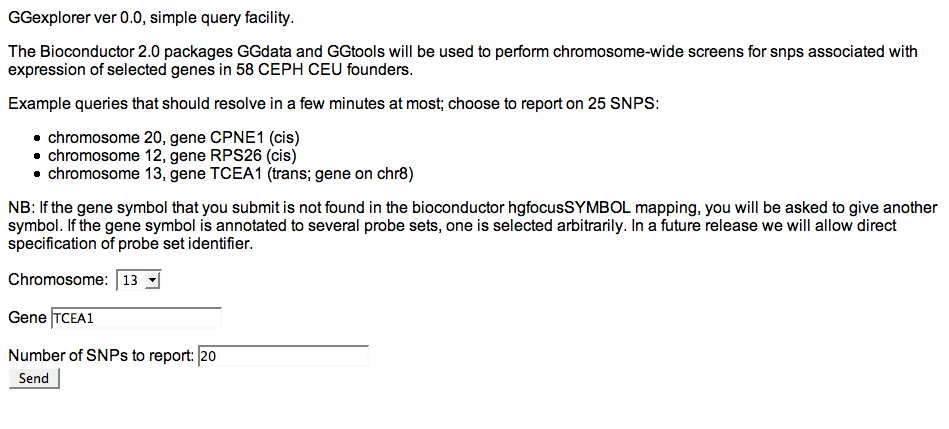
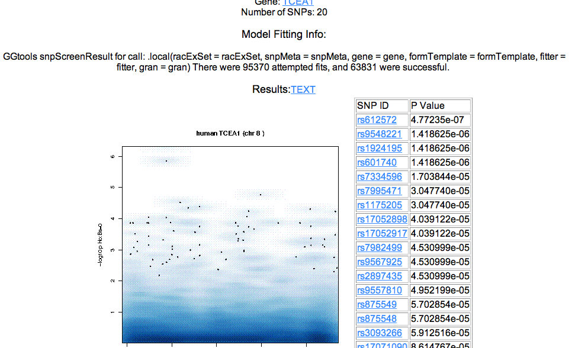
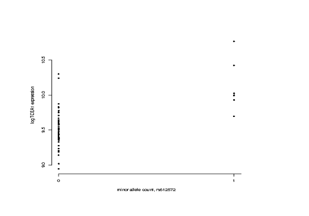
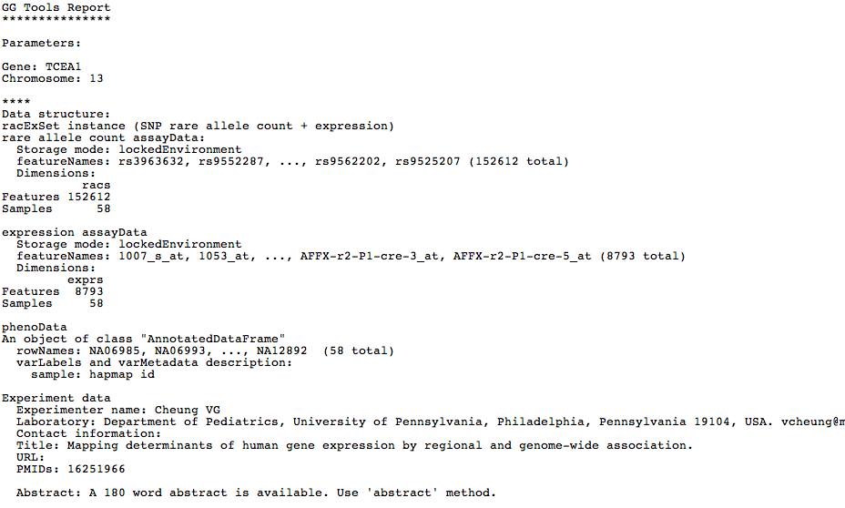

The GGexplorer query facility accepts a gene symbol and a chromosome number and performs GGtools::snpScreen to test for association between rare allele count and expression in the 58 founders of the CEU Ceph cohort.
The query page looks like this:

The output takes two main forms: a hyperlinked graphical page, and a text output.
The main display of the graphical page is the snp screen summary:

This image shows the chromosome position on the x axis and expression in log 2 scale on the y axis. The geneplotter::smoothScatter rendering algorithm is used.
For each reported snp, GGtools::plot_EvG is used to show the specific relationships between expression and rare allele count for each subject.

To reduce overplotting, in a future release, x values will be jittered.
GGexplorer also produces a textual output that you can download using the TEXT link on the main results page.

In a future release, an XML encoding of the data and metadata will be provided.